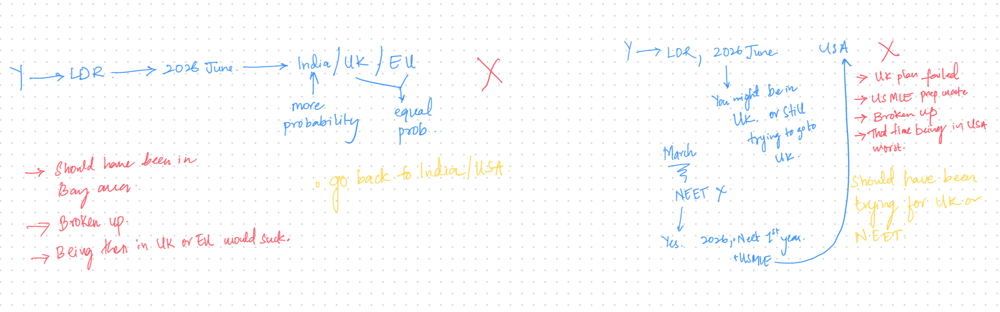

on mistakes
sometimes in life, making a mistake will cost us less than avoiding it. a person who never made a mistake never lived. mistakes are good. let me make this clear—mistakes coupled with conviction + action are good. sometimes, the conviction comes in too late, but better late than never. that’s one part of growing up. what we need to thrive is to get better at convicting ourselves. the faster, the better.
one way i discovered is spending time by yourself after a heavy period of intense days (or) after making major decisions (or) when something drastic happens in your life.
now, after conviction, i found that writing down all the choices i can make from where i stand—along with an estimation of what each decision entails—gives some clarity and calms that fucking horse stomping on my chest from overthinking everything. here’s an example of me trying to figure out what would happen if i got back with my ex.
the blue depicts the decisions. the red depicts what happens if things go left. the yellow is me trying to go right from the left lol. also, i introspect on what happened to me and how i reacted/responded to the stimuli.
note: these convictions have the power to make you go haywire. you might find yourself tripping on people, especially your close ones. do not do that. thug it out (as my homie says), gather yourself and your thoughts, and act on your conviction. if i were to judge people on their mistakes that weren’t followed by conviction + action, it would be justified. but if i were to judge their convicted mistakes? the world would collapse.
on another note, in creative brilliance, the work is approached experimentally—discovering what leads to the best outcome. this is where creative excellence thrives—eager to make mistakes to learn from them and enjoying the process along the way.